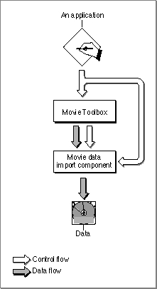
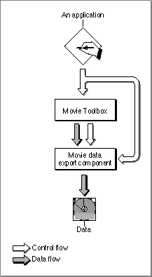

About Movie Data Exchange Components
This section provides background information about movie data exchange components. After reading this section, you should understand why these components exist and whether you need to create or use one.Movie data exchange components allow applications to place various types of data into a QuickTime movie or extract data from a movie in a specified format. Movie data import components translate foreign (that is, nonmovie) data formats into QuickTime movie data format. For example, a movie data import component might convert images from a paint application into frames in a QuickTime movie.
Conversely, movie data export components convert movie data into other formats, so that the data can be used by other applications. As an example, a movie data export component might allow an application to extract the sound track from a QuickTime movie in AIFF format. The extracted sound track may then be manipulated by applications that are not QuickTime-aware.
Applications use the services of movie data exchange components by calling the Movie Toolbox. Figure 9-1 shows the relationship between the Movie Toolbox and movie data import components; Figure 9-2 shows how movie data export components fit into the picture.
Figure 9-1 The Movie Toolbox, movie data import components, and your application

Figure 9-2 The Movie Toolbox, movie data export components, and your application

The next section describes in detail how to use each of these components.
If you are writing a media handler that works with a new type of data, you will probably need to use one or more data exchange components to facilitate the importing and exporting of data to QuickTime movies.